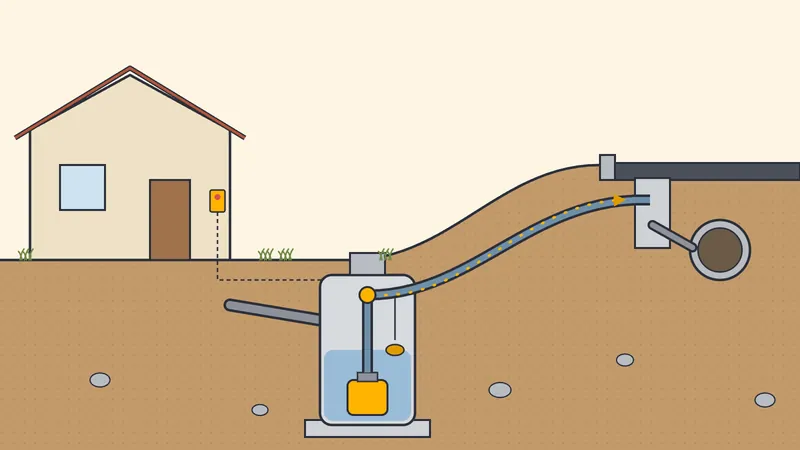

Poste de relevage des eaux usées : prix 2027, pose et obligations
Devis gratuit sous 24 h 07 45 14 20 49 WhatsAppNotre service : raccordement au tout-à-l'égout

Quand une maison est plus basse que l'égout, ses eaux usées ne peuvent pas y descendre seules : il faut les pomper. Un poste de relevage individuel enterré coûte 3 500 à 7 000 € TTC fourni et posé ; avec la tranchée, le regard et la ligne électrique, notre exemple chiffré arrive à 5 476 € HT, soit 6 024 € TTC. Ce guide complète celui du raccordement au tout-à-l'égout, qui couvre tout le branchement (démarches, PFAC, tranchée) : il ne traite que le cas où la gravité ne suffit pas.
Dans quels cas faut-il un poste de relevage ?
Un raccordement fonctionne par gravité, avec une pente d'au moins 1 % (1 cm par mètre) jusqu'à la boîte de branchement, en limite de propriété. Le poste devient nécessaire quand cette pente est impossible :
- La maison est en contrebas. Ce qui compte n'est pas le niveau de la chaussée mais le fil d'eau de la boîte de branchement, la cote du fond du tuyau. Si la sortie des eaux usées est plus basse, aucune distance ne rattrape la différence.
- Un sous-sol est équipé. WC, douche ou buanderie au sous-sol rejettent sous la canalisation principale. Seuls ces appareils sont relevés ; le reste de la maison s'écoule normalement.
- La distance est longue. À 60 m de la rue avec 40 cm de dénivelé, la pente tombe à 0,7 % : trop peu pour un écoulement fiable, et creuser plus profond coûte vite plus cher qu'une pompe.
Pour trancher, divisez le dénivelé entre la sortie de la maison et le fil d'eau de la boîte (le service d'assainissement le communique) par la distance : au-dessus de 1 %, on reste en gravitaire. Et l'on ne pompe que ce qui est trop bas, pour ménager la pompe et garder des WC utilisables pendant une coupure.
Poste de relevage obligatoire : ce que disent les textes
Aucun texte n'impose un poste de relevage en tant que tel. Ce qui est obligatoire, c'est le raccordement au réseau collectif dans les deux ans suivant sa mise en service (article L1331-1 du Code de la santé publique). L'article L1331-4 met à la charge du propriétaire les ouvrages qui amènent ses eaux usées jusqu'à la partie publique du branchement, et leur entretien : en contrebas, le poste de relevage est cet ouvrage. Une exonération reste exceptionnelle, décidée au cas par cas, et suppose un assainissement individuel conforme ; notre comparatif fosse septique ou tout-à-l'égout éclaire ce choix.
Le règlement sanitaire départemental impose en outre de protéger contre le reflux de l'égout les appareils situés sous le niveau de la rue : c'est le rôle du clapet anti-retour et, pour une station intérieure, d'une boucle de la conduite qui remonte au-dessus de ce niveau. Le même règlement ne tolère le WC broyeur qu'en appoint, dans un logement existant qui a déjà un WC classique ; pour tout un sous-sol, il faut une station conforme à la norme NF EN 12050-1.
Poste individuel, commun ou public : qui paie quoi ?
La boîte de branchement marque la frontière. Côté rue, la partie publique du branchement est réalisée sous la responsabilité de la collectivité, qui peut s'en faire rembourser tout ou partie (article L1331-2), en plus de la PFAC. Côté terrain, tout est à votre charge : poste, conduite, alimentation électrique, consommation, entretien.
- Le poste individuel ne sert que votre maison : c'est le cas chiffré dans ce guide.
- Le poste commun dessert plusieurs maisons, avec deux pompes qui alternent et se secourent. Coût et entretien se partagent par une association syndicale ou une convention écrite ; une conduite qui traverse un terrain voisin exige une servitude notariée.
- Le poste public appartient au réseau, quand tout un quartier est en contrebas ; sur un réseau sous pression, le règlement de service dit qui possède et entretient la pompe de chaque maison.
Les composants d'un poste de relevage
Un poste domestique se livre prêt à poser : une cuve en polyéthylène ou en béton de 300 à 1 000 litres, avec rehausse et tampon ; une pompe immergée ; des flotteurs qui commandent démarrage, arrêt et alarme de niveau haut ; un coffret de commande au sec, avec alarme sonore et lumineuse, idéalement sur batterie. En sortie, un clapet anti-retour (à boule, le moins sujet au colmatage) empêche l'eau de redescendre à chaque arrêt, et une vanne isole la pompe. La conduite de refoulement, sous pression, n'a pas besoin de pente, seulement d'être hors gel. La cuve doit enfin être ventilée, sinon odeurs et gaz corrosifs s'accumulent.
Pompe dilacératrice ou pompe vortex ?
La dilacératrice broie les matières avec un couteau rotatif : plus de pression, une conduite fine de 40 ou 50 mm, c'est le choix des longues distances et des grands dénivelés. La vortex, à roue dégagée, laisse passer les solides sans les broyer ; plus simple et tolérante aux corps durs, elle demande une conduite d'environ 80 mm et convient aux relevages courts.
Dimensionner le poste : volume, hauteur et débit
Trois notions suffisent pour lire un devis. Le volume : une famille de quatre personnes rejette 500 à 600 litres d'eaux usées par jour ; une cuve de 500 à 800 litres évite que la pompe démarre à chaque chasse d'eau et garde une réserve pour une coupure. La hauteur manométrique totale, soit le dénivelé plus les pertes de charge de la conduite : de l'ordre de 3 à 5 m dans notre exemple chiffré. Le débit : au moins 0,7 m/s dans la conduite pour entraîner les matières. Une pompe surdimensionnée n'est pas une sécurité : elle cycle trop court et s'use plus vite.
Installation : les travaux, étape par étape
La pose d'un poste enterré est un chantier de terrassement autant que de plomberie :
- Déclarations et fouille. Les DT-DICT localisent les réseaux avant de creuser. La fouille reprend la cuve avec 30 à 50 cm de marge, souvent sur 1,8 à 2,2 m ; au-delà de 1,30 m, elle se talute ou se blinde avant que quiconque y descende.
- Lit de pose et calage. 10 à 20 cm de sable ou de gravillon réglé de niveau. Si la nappe est haute, une cuve vide subit une poussée d'environ une tonne par mètre cube : on la sangle sur une dalle de lestage en béton, selon la notice du fabricant.
- Remblai. Sable ou gravillon par couches compactées de 20 à 30 cm, en remplissant la cuve d'eau au même rythme pour équilibrer les pressions. Sous un passage de voiture : dalle de répartition et tampon de classe B125 au minimum.
- Tranchée et regard. Environ 0,80 m de profondeur, lit de sable et grillage avertisseur marron (voir le prix d'une tranchée au mètre linéaire). La conduite débouche dans un regard brise-charge, côté privé, d'où les eaux rejoignent la boîte de branchement par gravité : beaucoup de règlements refusent une conduite sous pression branchée directement sur le réseau.
- Électricité. Ligne dédiée depuis le tableau, différentiel 30 mA selon la norme NF C 15-100, câble sous gaine rouge. C'est le travail d'un électricien ; la tranchée peut accueillir la gaine, avec son propre grillage.
- Mise en service. Réglage des flotteurs, essais, puis contrôle de conformité par le service d'assainissement.
Pour un sous-sol, la station se pose souvent à l'intérieur ; s'il reste à construire, prévoyez réservations et traversées dès le terrassement du sous-sol. Les eaux de drainage relèvent d'une pompe d'eaux claires séparée, et les eaux de pluie ne vont jamais dans le poste, qu'elles satureraient au premier orage (voir la gestion des eaux pluviales).
Prix d'un poste de relevage en 2027
Prix TTC pour un particulier, TVA à 10 % sur un logement de plus de deux ans. Le poste enterré, le WC broyeur, les tranchées et le regard reprennent nos guides et notre grille de tarifs ; les autres lignes sont des prix indicatifs du marché, convertis en TTC.
| Équipement ou prestation | Prix TTC | À savoir |
|---|---|---|
| WC broyeur adaptable | 700 à 1 500 € posé | Appoint seulement |
| Station compacte intérieure | 1 000 à 3 000 € fournie | Sous-sol, hors pose |
| Poste individuel enterré, fourni et posé | 3 500 à 7 000 € | Cuve, pompe, flotteurs, alarme, clapet, fouille et raccordements |
| Tranchée de refoulement, 0,80 m | 25 à 35 €/ml (terre), 40 à 70 €/ml (calcaire ou rocheux) | Creusement et fond de fouille |
| Conduite de refoulement PE, fournie et posée | 11 à 22 €/ml | Sable, grillage et remblai compris |
| Regard brise-charge ou de branchement | 300 à 800 € | En limite de propriété ; 1 000 à 2 000 € sous voie carrossable |
| Ligne électrique, par un électricien | 450 à 1 000 € | Selon la distance au tableau |
| Calage anti-flottaison | 450 à 1 000 € | En présence de nappe |
| Réfection de surface sur la tranchée | 16 à 44 €/ml | Selon le revêtement |
| Poste commun à deux pompes | 9 000 à 27 500 € | À partager entre maisons |
Les 3 500 à 7 000 € du poste enterré correspondent au surcoût que notre guide du raccordement indique pour un terrain en contrebas : la tranchée et le regard seraient nécessaires de toute façon. Prix hors PFAC et hors partie publique du branchement.
Exemple chiffré : une maison 1,10 m sous la boîte de branchement
Maison de plain-pied, quatre occupants, sortie des eaux usées 1,10 m sous le fil d'eau de la boîte de branchement, à 22 m. Terre ordinaire, sans nappe, tranchée sous pelouse.
| Poste | Calcul | Montant HT |
|---|---|---|
| Station prête à poser : cuve de 600 litres, pompe dilacératrice, flotteurs, coffret d'alarme, clapet, vanne | Fourniture | 2 300 € |
| Fouille, pose et remblai de la cuve | Mini-pelle avec chauffeur, 1 jour | 550 € |
| Sable de pose et de remblai | 3 m³ × 60 €/m³ | 180 € |
| Raccordements, mise en eau, essais | Forfait | 350 € |
| Sous-total : poste posé | 2 300 + 550 + 180 + 350 | 3 380 € |
| Tranchée 0,80 m, terre ordinaire | 22 ml × 30 €/ml | 660 € |
| Conduite PE de 40 mm, sable, grillage, remblai | 22 ml × 15 €/ml | 330 € |
| Regard brise-charge | Forfait | 400 € |
| Évacuation des déblais (foisonnement 1,3, décharge à moins de 10 km) | 4 m³ × 1,3 × 30 €/m³ | 156 € |
| Ligne électrique, par un électricien | Forfait | 550 € |
| Total HT | 3 380 + 660 + 330 + 400 + 156 + 550 | 5 476 € |
| TVA à 10 % (logement de plus de deux ans) | 5 476 × 0,10 | 548 € |
| Total TTC | 5 476 + 548 | 6 024 € |
Le relevage proprement dit (poste posé et électricité) pèse 3 930 € HT ; le reste existerait aussi en gravitaire. Les 4 m³ évacués sont le volume de la cuve et du sable. En sol calcaire, la tranchée passe à 40 à 70 €/ml (22 × 55 = 1 210 € au lieu de 660 €) et la fouille demande un engin à brise-roche, 80 à 110 €/h avec chauffeur. Une nappe haute ajoute le calage, 400 à 900 € HT ; une allée à refaire, 15 à 40 €/ml HT, soit 330 à 880 € HT sur 22 m.
Un poste de relevage à prévoir dans les Bouches-du-Rhône ?
STP Terrassement chiffre la fouille, la pose du poste, la tranchée de refoulement et le raccordement à la boîte de branchement dans un même devis, avec une équipe de plus de 15 ans d'expérience de l'équipe en VRD. La ligne électrique reste à confier à un électricien.
Pressé ? 07 45 14 20 49 ou WhatsApp
Entretien, durée de vie et pannes fréquentes
Une visite une à deux fois par an suffit : nettoyage des flotteurs, contrôle du clapet, essais de l'alarme et de la pompe, et un curage de la cuve tous les un à trois ans. Comptez 150 à 300 € par an de contrat d'entretien (prix indicatif) et une cinquantaine de kWh d'électricité. La cuve dure plusieurs décennies, la pompe 8 à 15 ans ; la remplacer coûte 900 à 2 500 € TTC posée. Les pannes ont presque toujours les mêmes causes :
- Les lingettes, même « jetables dans les toilettes » : elles s'enroulent autour de la roue ou du couteau et bloquent la pompe. Une poubelle dans chaque WC coûte moins cher qu'un dépannage.
- Les graisses de cuisson, qui figent en croûte et collent les flotteurs : la pompe ne démarre plus, ou ne s'arrête plus.
- Les coupures de courant : réduisez l'eau au strict nécessaire et, là où elles sont fréquentes, prévoyez une prise pour groupe électrogène.
- Les eaux parasites : une cuve mal étanche ou une gouttière raccordée par erreur font tourner la pompe sans arrêt.
Questions fréquentes
Quel est le prix d'un poste de relevage pour une maison ?
Un poste individuel enterré coûte 3 500 à 7 000 € TTC fourni et posé. Avec tranchée, conduite, regard et ligne électrique, notre exemple d'une maison à 22 m de la rue arrive à 5 476 € HT, soit 6 024 € TTC, hors PFAC.
Quel est le prix d'une pompe de relevage des eaux usées seule ?
Comptez 900 à 2 500 € TTC pour remplacer la pompe d'un poste existant, pose comprise. Pour un sous-sol, une station compacte intérieure coûte 1 000 à 3 000 € TTC hors pose (prix indicatif), un WC broyeur 700 à 1 500 € posé.
Un poste de relevage est-il obligatoire ?
Le poste n'est imposé par aucun texte, mais le raccordement au réseau collectif l'est, dans les deux ans suivant sa mise en service. En contrebas, le relevage est le moyen de s'y conformer, à la charge du propriétaire. Une dérogation reste exceptionnelle.
Qui paie le poste de relevage, la commune ou le propriétaire ?
Le propriétaire, pour tout ce qui est sur son terrain : poste, conduite, électricité, entretien. La collectivité réalise la partie publique du branchement mais peut la refacturer, et la PFAC reste due.
Que se passe-t-il en cas de coupure de courant ?
La pompe s'arrête et la cuve se remplit. Sa réserve laisse en général quelques heures d'usage normal, davantage en limitant l'eau ; au-delà, les eaux débordent par le point le plus bas de la maison. Une alarme sur batterie prévient à temps.
Quelle est la durée de vie d'une pompe de relevage ?
De 8 à 15 ans en usage domestique, selon la qualité de la pompe, le nombre de démarrages et l'entretien ; la cuve dure plusieurs décennies. Lingettes et graisses sont les premières causes de panne prématurée.